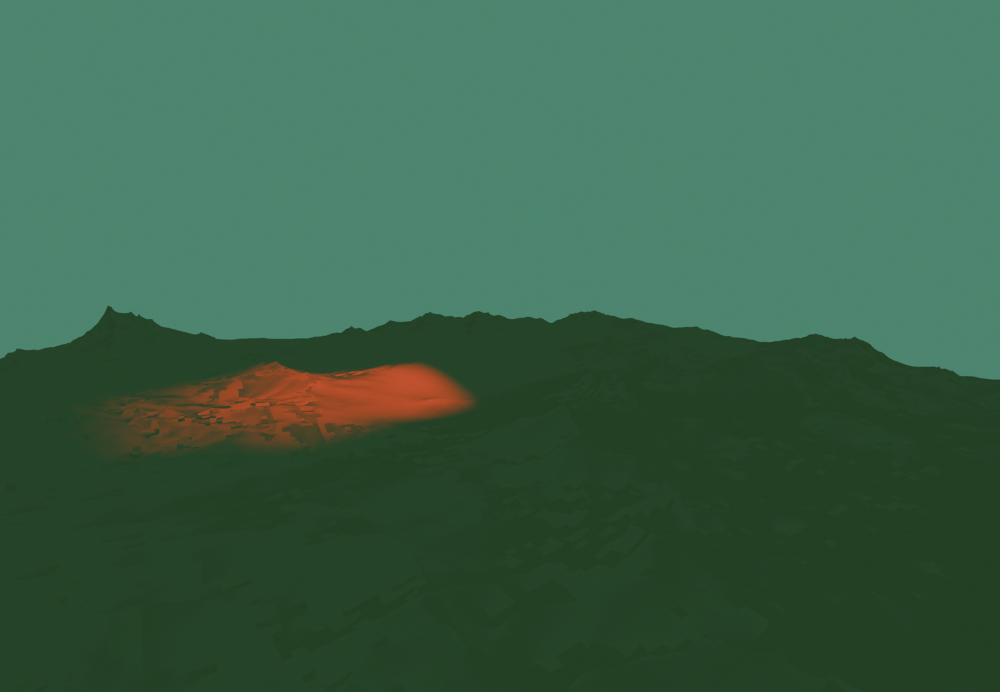
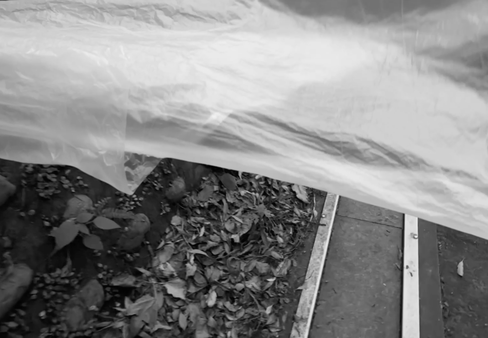
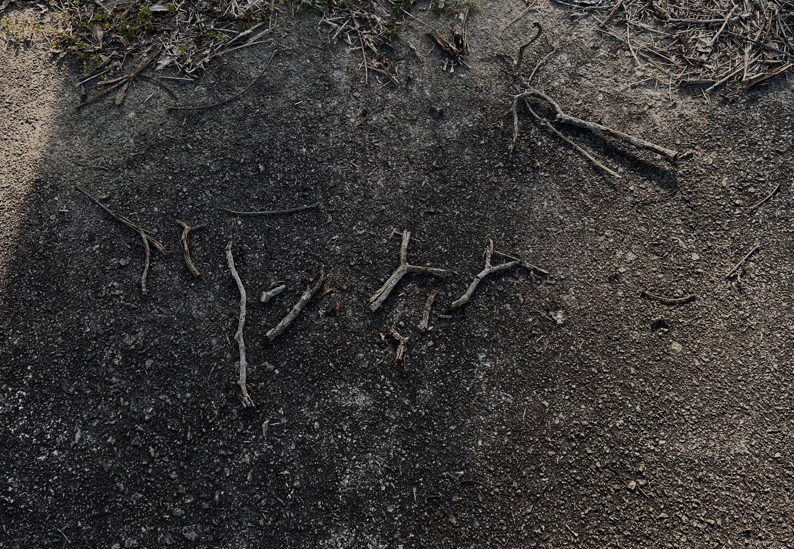

CHRISTINA LEE
Studio
Projects
Research
Exhibitions
Contact
- Studio Research & Visual References Log
Ref // 01. Consciousness Cycles
2026.05

Ref // 03. Everyday Drift and Perception Gaps
2026.04

Ref // 04. Panoramic Masking / Godot Testing
2026.03

Ref // 05. Subsurface Topography Research
2026.03